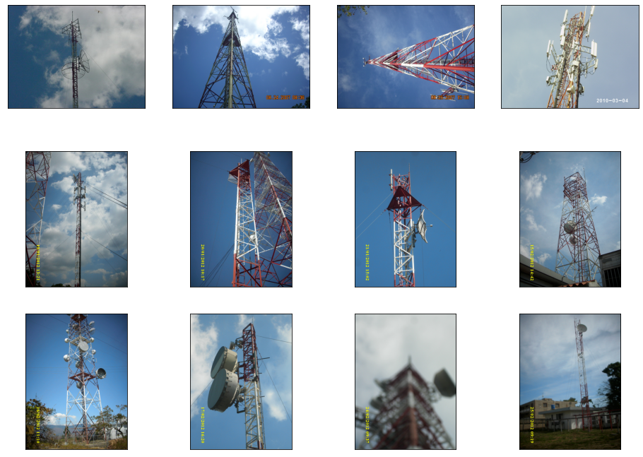

DOTENV_PATH = './.env'Building an Object Detection with Azure Custom Vision - Part 1

Introduction
In this series of post we are going to follow along the process and code required to train an object detection model using Azure Custom Vision (in its free tier.
We are going to use real world pictures compiled from work I have done over the years in Venezuela. For this supervised learning problem we need to tagged images. So we will use Smart Labeler to do that.
After the model is published in Azure service, we can use the API to build and share a demo with Gradio and Huggingface.
Here is the one that is already published for you to test:
Telecom-Object-Detection
The objects the model will be trained to detect are the following:
- Grid Antenna
- Panel antenna
- Radome antenna
- RRU
- Shroud antenna
- Solid antenna

|

|

|
| Grid | Panel | Radome |

|

|

|
| RRU | Shroud | Solid |
Tutorial Parts
- Part 1 will cover:
- Creating a free Azure Custom Vision Service.
- Uploading the images to the service.
- Analyzing what happens to the images after uploading.
- Part 2 will cover:
- How to label the images using Smart Labeler
- Training and publishing the model.
- Part 3 will cover:
- Create a Huggingface Gradio Demo.
References
- Microsoft Learn Excersice: Detect Objects in Images with Custom Vision
- Custom Vision Documentation: Quickstart: Create an object detection project with the Custom Vision client library
- REST API Endpoint: Custom Vision REST API reference - Azure Cognitive Services
- APIs Documentation: Custom_Vision_Training_3.3
- Azure SDK for Python: Azure Cognitive Services Computer Vision SDK for Python
- Source Code: Azure/azure-sdk-for-python
Part 1.1: Create a Custom Vision Service
I’m not going to get into the details of creating the service. And the reason is that there is a detailed tutorial covering not just that, but also the code for uploading and training a simple model. I encourage you to try it first:
Detect Objects in Images with Custom Vision
For this tutorial I created a Custom Vision with the following settings:
- Custom Vision service:
- Resource: ai102cvision
- Resource Kind: Custom Vision Training
- Project:
- Name: Telecom Equipment Detection
- Description: Detect different types of antennas
- Resource: ai102cvision [F0]
- Project Types: Object Detection
- Domains: General
Part 1.2: Upload the images
Environment variables
Update the configuration variables in the .env file that contains:
TrainingEndpoint=YOUR_TRAINING_ENDPOINT
TrainingKey=YOUR_TRAINING_KEY
ProjectID=YOUR_PROJECT_ID
Note
In order to protect my credentials, I’m going to store .env file in a creds folder that isn’t being pushed to github.
Install and import libraries
We need to install Custom Vision’s Python SDK and python-dotenv:
! pip install azure-cognitiveservices-vision-customvision==3.1.0
! pip install python-dotenv
from azure.cognitiveservices.vision.customvision.training import CustomVisionTrainingClient
from azure.cognitiveservices.vision.customvision.training.models import ImageFileCreateBatch, ImageFileCreateEntry, Region
from msrest.authentication import ApiKeyCredentials
import time
import json
import os
import pandas as pd
from dotenv import load_dotenv
from pathlib import Path
from PIL import Image
from PIL import UnidentifiedImageError
import matplotlib.pyplot as pltCredentials and services
load_dotenv(DOTENV_PATH)
training_endpoint = os.getenv('TrainingEndpoint')
training_key = os.getenv('TrainingKey')
project_id = os.getenv('ProjectID')
credentials = ApiKeyCredentials(in_headers={"Training-key": training_key})
training_client = CustomVisionTrainingClient(training_endpoint, credentials)
custom_vision_project = training_client.get_project(project_id)Functions
# Borrowed from fastai library
def verify_image(fn):
"Confirm that `fn` can be opened"
try:
im = Image.open(fn)
im.draft(im.mode, (32,32))
im.load()
return True
except: return False
#except PIL.UnidentifiedImageError:The SDK / API allows to upload images in batches but I didn’t find a way to match the local image name with the id generated by the service. Then I opted to create a function that uploads the pictures one by one.
def Upload_Images_1by1(pictures: list[Path]) -> list('dict'):
"""Upload the pictures from a list of paths,
one by one to keep track of the relation between
local image name and Azure image id.
And to track the ones that python fails opening
"""
print("Uploading images...")
processed_ids = []
processed_status = []
picture_names = []
for pic_path in pictures:
if verify_image(pic_path):
with open(pic_path, mode="rb") as image_data:
image_entry = ImageFileCreateEntry(name=pic_path.name, contents=image_data.read())
# Upload the list of (1) images as a batch
upload_result = training_client.create_images_from_files(
custom_vision_project.id,
# Creates an ImageFileCreateBatch from a list of (1) ImageFileCreateEntry
ImageFileCreateBatch(images=[image_entry])
)
# Check for failure
if not upload_result.is_batch_successful:
pic_status = upload_result.images[0].status
pic_id = None
else:
pic_status = upload_result.images[0].status
pic_id = upload_result.images[0].image.id
else:
pic_status = "ReadError" # Equivalente to SDK `ErrorSource`
pic_id = None
processed_status.append(pic_status)
processed_ids.append(pic_id)
picture_names.append(pic_path.name)
print(pic_path.name, "//", pic_id, "//", pic_status)
return {"image_name": picture_names, "image_id": processed_ids, "image_status": processed_status}Explore pictures
pics_folder = Path('./train_images')
pictures = sorted(list(pics_folder.iterdir()))
print(f"There are {len(pictures)} pictures")There are 203 picturesfig, axes = plt.subplots(3, 4, figsize=(16, 12))
def show_img(im, figsize=None, ax=None):
if not ax: fig, ax = plt.subplots(figsize=figsize)
ax.imshow(im)
ax.get_xaxis().set_visible(False)
ax.get_yaxis().set_visible(False)
return ax
for i, ax in enumerate(axes.flat):
im = Image.open( pictures[i*10] )
ax = show_img(im, ax=ax)
As you can see the pictures are very varied. Different cameras, lighting conditions, focus, resolutions and sizes…
Upload the pictures
uploaded_images_df = pd.DataFrame(columns=["image_name", "image_id", "image_status"])upload_batch = Upload_Images_1by1(pictures)Uploading images...
41.JPG // 5fc8bfe8-20da-4ef2-88b1-d9129bc5dc23 // OK
CIMG0030.JPG // de3db466-a262-4d65-88d1-380ece29d21e // OK{'image_name': ['41.JPG', 'CIMG0030.JPG'],
'image_id': ['5fc8bfe8-20da-4ef2-88b1-d9129bc5dc23',
'de3db466-a262-4d65-88d1-380ece29d21e'],
'image_status': ['OK', 'OK']}uploaded_images_df = pd.DataFrame(upload_batch)| image_name | image_id | image_status | |
|---|---|---|---|
| 0 | 41.JPG | 5fc8bfe8-20da-4ef2-88b1-d9129bc5dc23 | OK |
| 1 | CIMG0030.JPG | de3db466-a262-4d65-88d1-380ece29d21e | OK |
Save a csv
uploaded_images_df.to_csv('20221012_203_Images_Uploaded.csv', index=False)(PosixPath('train_images'), '41.JPG')